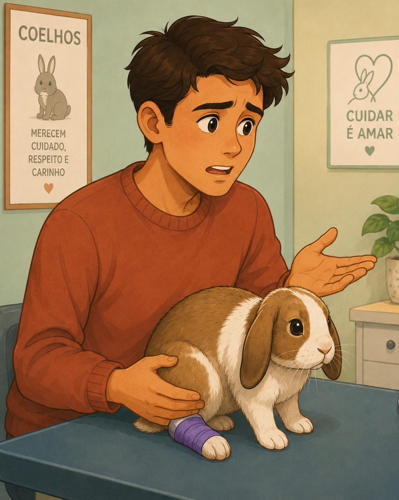
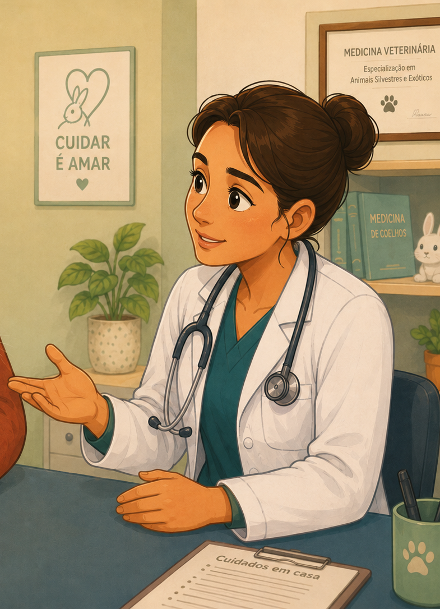
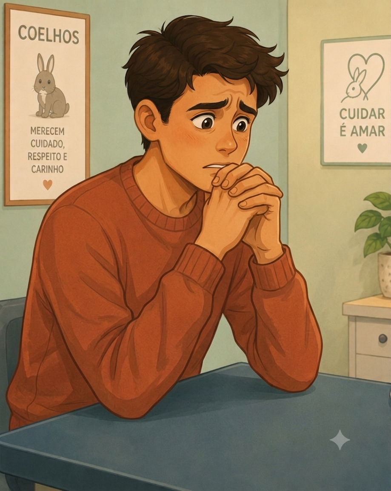
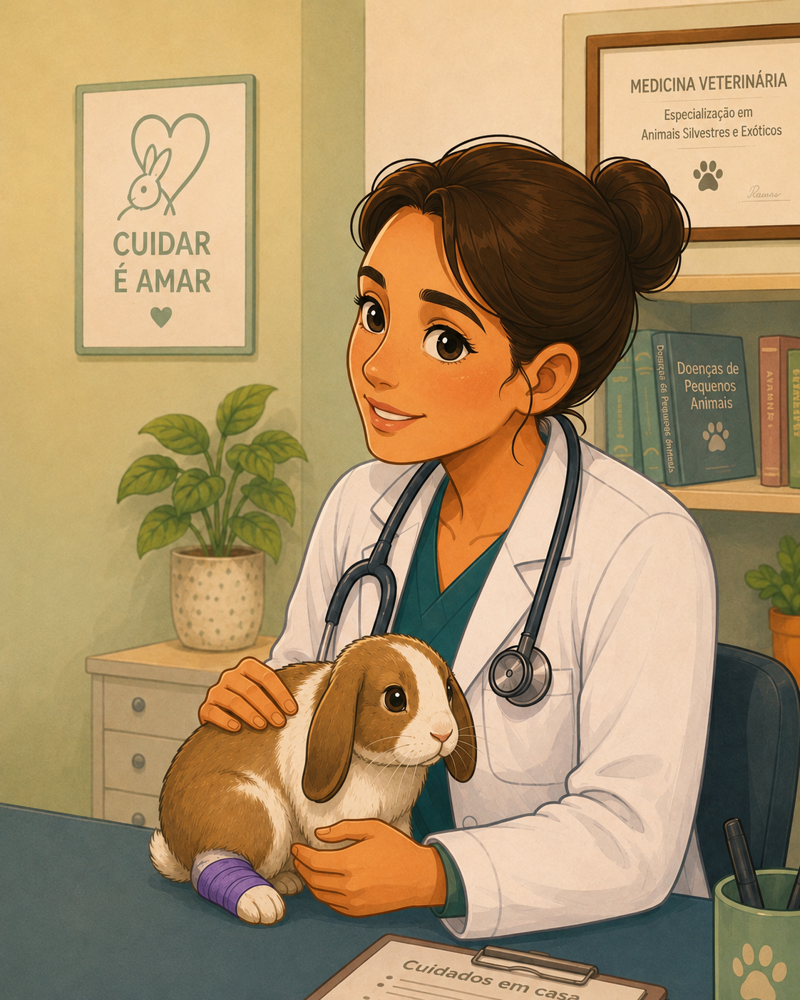
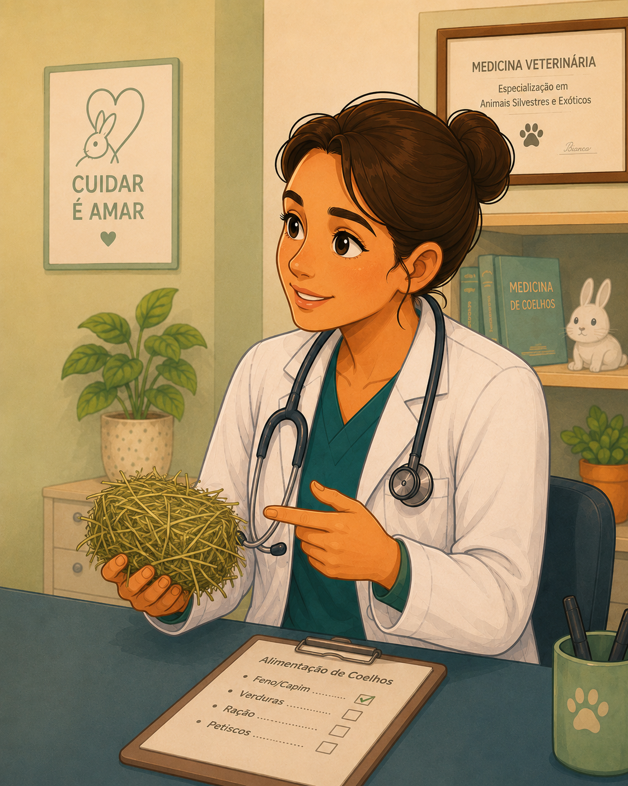
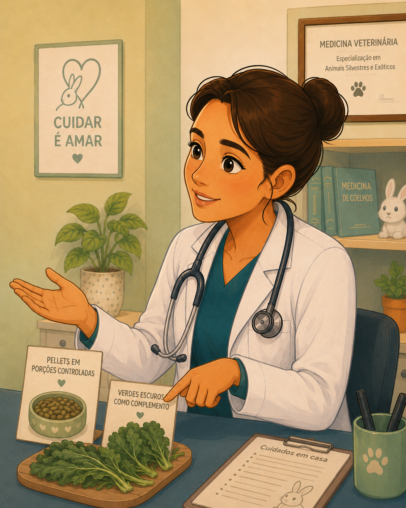
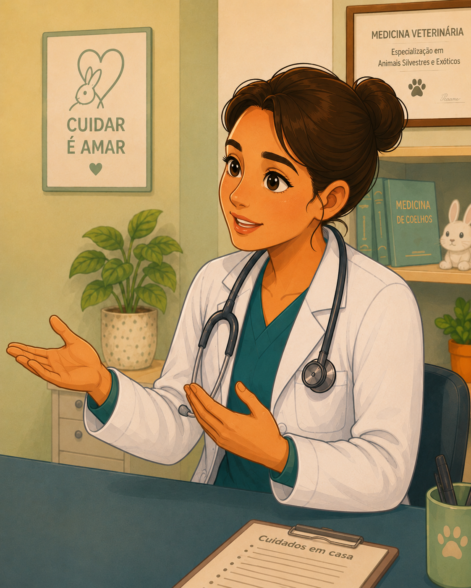

Tutor:
Doutora, resgatei o Nupi faz alguns dias, mas ele vive assustado. O antigo dono deixava ele preso numa gaiola muito pequena e oferecia quase só cenoura.
Início
Nupi foi resgatado depois de viver em condições inadequadas. Agora, seu novo tutor precisa aprender como oferecer a ele um ambiente seguro, uma alimentação adequada e os cuidados necessários.

Etapa 1 de 6
Doutora, resgatei o Nupi faz alguns dias, mas ele vive assustado. O antigo dono deixava ele preso numa gaiola muito pequena e oferecia quase só cenoura.
Entendo. Vamos examiná-lo. Muita gente acredita que gaiola e cenoura são suficientes, mas coelhos precisam de espaço, segurança e uma alimentação adequada. Essas condições podem ter contribuído para o medo e para os problemas de saúde dele.

Etapa 2 de 6

Sério? Eu achava que a cenoura era suficiente! O que eu preciso mudar no ambiente dele?
O ideal é que ele tenha um espaço cercado ou um cômodo seguro para correr e gastar energia. Quando fica assustado, o Nupi costuma procurar algum lugar para se esconder?

Etapa 3 de 6
Sim. Ele se encolhe num canto e parece não saber para onde ir.
Então prepare um cantinho calmo com uma toca para ele se proteger. Coloque também brinquedos de madeira próprios para coelhos. E, ao segurá-lo, apoie bem o corpo e não force quando ele estiver com medo.
Etapa 4 de 6
Caramba, faz sentido. Então a toca vai ajudar o Nupi a se sentir seguro. E sobre a comida? O que eu dou no lugar da cenoura?
A base da alimentação deve ser o feno de capim, que precisa ficar disponível o dia inteiro.

Etapa 5 de 6
Feno o dia todo? Mas e a ração?
A ração peletizada entra sim, mas em porções controladas. Folhas verdes escuras, bem lavadas, podem complementar a alimentação, e a cenoura deve ser oferecida apenas de vez em quando.

Etapa 6 de 6
Entendi: feno o dia inteiro, ração controlada e folhas verdes para complementar. Caraca, eu estava fazendo muita coisa errada. Como eu aprendo a cuidar dele direito para não vacilar mais?
O segredo é continuar observando o Nupi, conversando com profissionais e trocando experiências com outros tutores. Inclusive, vai rolar o I Encontro de Tutores de Coelhos do Ceará, aqui em Fortaleza. Antes disso, topa analisar algumas situações e decidir como você cuidaria dele?
